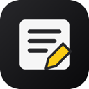

AnyAnnotate
Save destinations and privacy settings
Default Save Destination
Every annotation has its own Save to selector and one Save button. The last destination you save to becomes the default. A local backup is always kept.
Reusable Local Files
Optional: choose a file to append notes to. Without one, saving Markdown or TXT asks for a filename and location each time.
Chrome receives read and write access only to the file you select. If permission expires, new annotations remain safely in the local inbox.
Local Inbox
0 annotations are backed up in this browser.
Google Docs Not connected
Connect Google and choose a document to append annotations. Your local inbox is always kept.
Google's Docs permission allows access to your Google documents. AnyAnnotate only reads or updates the document you choose and only creates a document when you ask.
This build needs a Google OAuth client ID before it can connect. Setup instructions
Export appends clips not already sent to this document tab. To save an individual annotation here, choose Google Docs in its Save to selector. Disconnecting does not delete your document.
Privacy
Local saves stay on your device. Google Docs is optional: when you choose it, annotations and their source details are sent directly to Google. AnyAnnotate has no server, analytics, or AI calls.